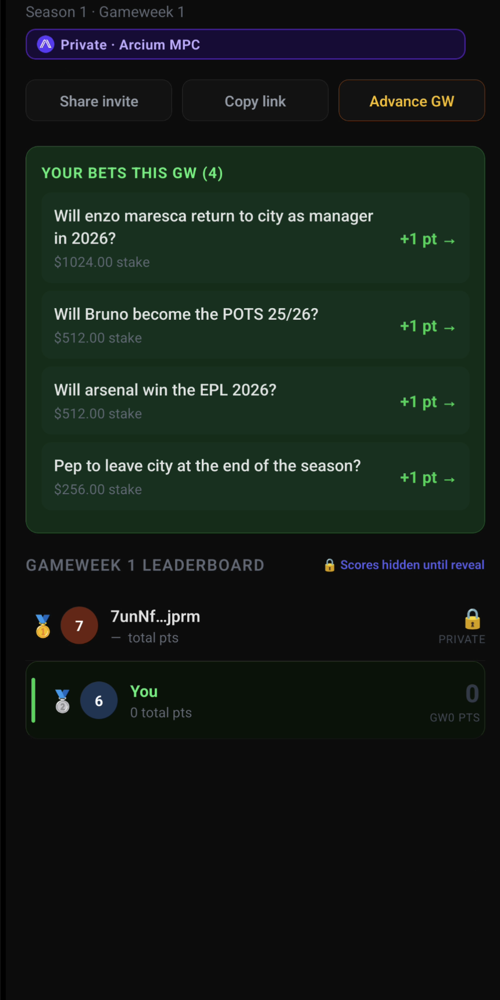
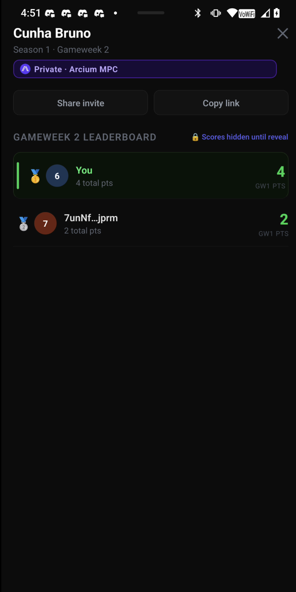

Sweat your bets
in private.
End-to-end ciphertext — including the math.
Fan-league picks on Terrace run on Arcium. Picks are encrypted client-side with
x25519 + RescueCipher, sealed on Solana as
Enc<Mxe, u64>, and scored by a committee of
Arx nodes running our circuit over secret shares —
no Arx node, server, or indexer ever sees the plaintext.
1 · Client
Encrypt pick
x25519 + RescueCipher
2 · Solana
Queue computation
queue_computation()
3 · Arx MPC
Score in ciphertext
Enc<Mxe, u64>
4 · Solana
Write back
#[arcium_callback]
5 · User
Opt-in reveal
.reveal()
🔐
Pick never leaves the device in plaintext
Encrypted to the MXE cluster pubkey via
RescueCipher + x25519 key exchange. Solana stores ciphertext, never YES/NO.
🧮
MPC compare over secret shares — no single Arx sees your pick
Arx node committee evaluates
if pick == winning_outcome. Both branches execute (MPC invariant); the bit stays sharded across nodes.
🔁
Sealed state chains ciphertext → ciphertext
Scores persist as
Enc<Mxe, u64> in a PDA. #[arcium_callback] writes the new ciphertext back on-chain. .reveal() is opt-in.
encrypted-ixs/src/lib.rs
Arcis circuit · runs on MPC
#[encrypted] mod circuits {
#[instruction]
pub fn record_private_league_win(
sealed_pick: Enc<Mxe, u64>,
winning: u64,
score: Enc<Mxe, u64>,
) -> Enc<Mxe, u64> {
let pick = sealed_pick.to_arcis();
let s = score.to_arcis();
// MPC: both branches execute over secret shares;
// no Arx node reconstructs `pick` in plaintext.
let inc = if pick == winning { 1 } else { 0 };
score.owner.from_arcis(s + inc)
}
}
Live on devnet

